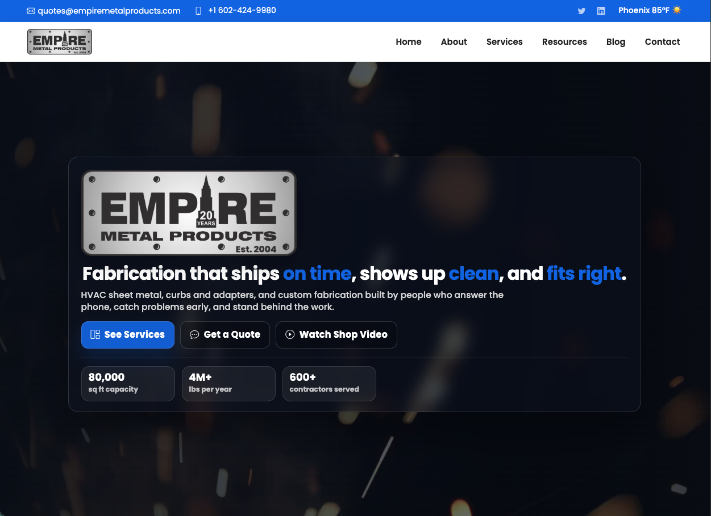
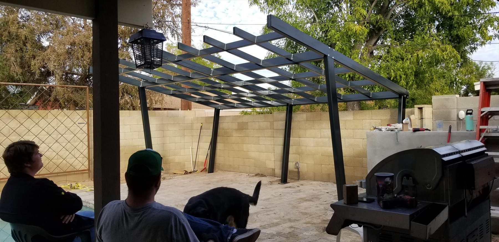
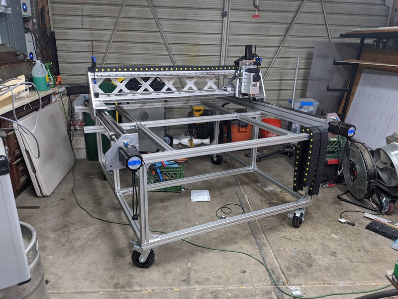
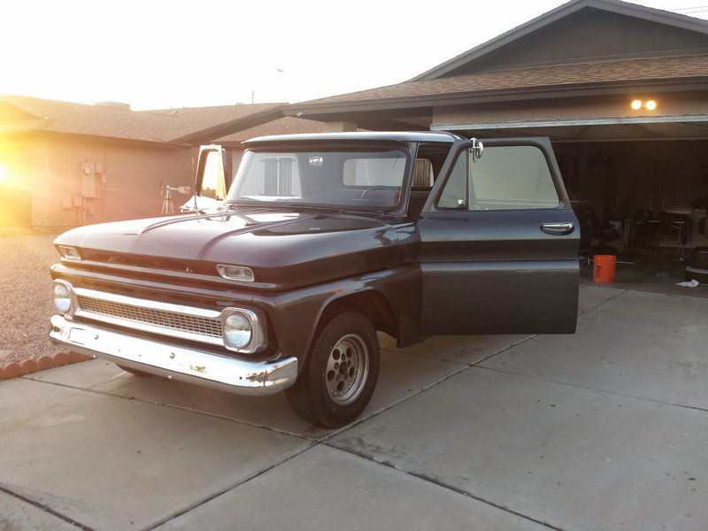
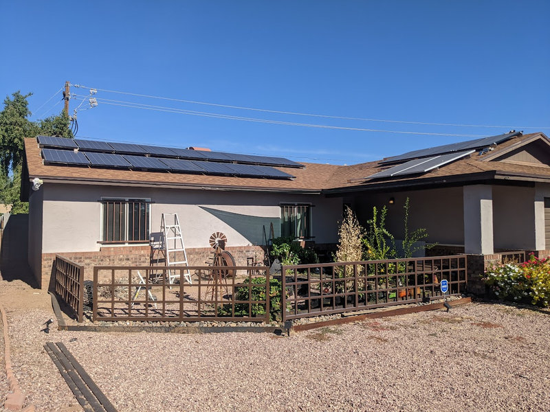
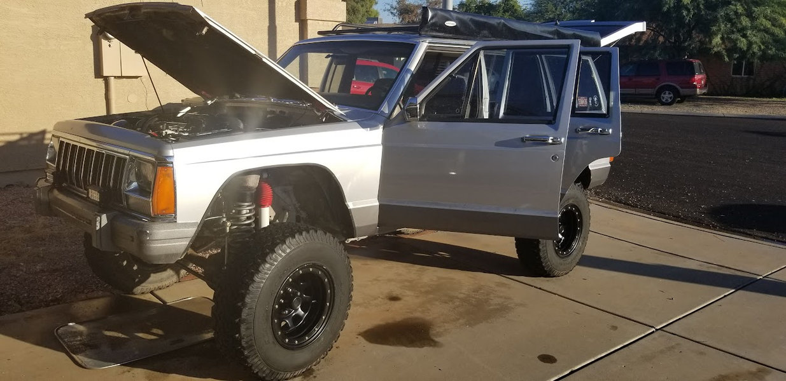
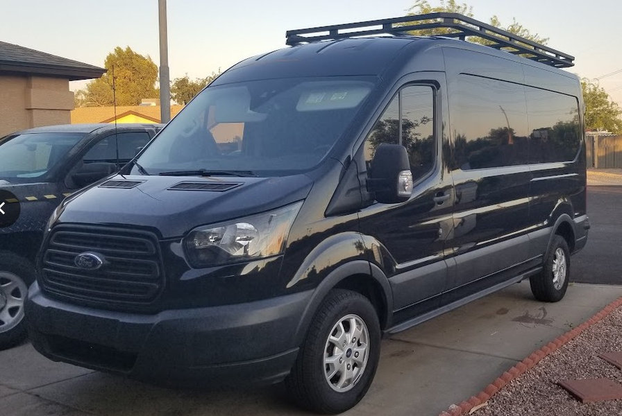
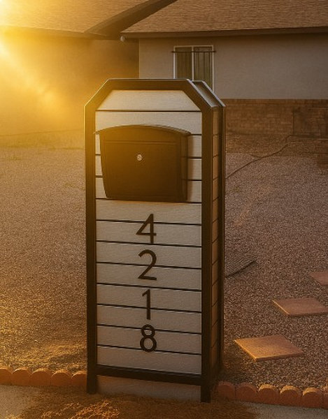
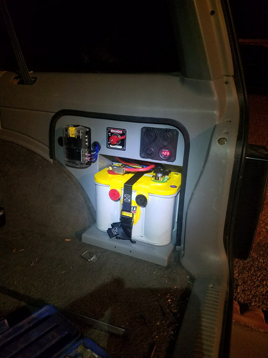

New

Adventure Time Memorial Golf Outing Website
A personal memorial event site that still had to work like a real system: registration, sponsorship tiers, Stripe checkout, and Google Sheets records for the people running the outing.
BUILT WORK
A look at the work: fabrication builds, websites, tools, vehicle projects, and practical fixes shaped by real constraints.
ABOUT CHRIS
I manage custom fabrication work at Empire Metal Products in Phoenix, and 20+ years in that world has shaped how I look at everything else: websites, tools, systems, camp setups, and rough ideas all have to survive real constraints.
People come to me with fabrication questions, messy websites, small tools, camp systems, vehicle setups, and half-formed projects. My job is to sort out what matters, what does not, and what should happen next.
A photo, sketch, link, measurement, deadline, or short description is enough to start. I will help turn it into the next useful step.
Ask ChrisSERVICES
Some work routes through Empire, some comes directly through me. The goal is the same: make the next step clearer.
A personal memorial event site that still had to work like a real system: registration, sponsorship tiers, Stripe checkout, and Google Sheets records for the people running the outing.

A shop website rebuilt around proof and utility: real fabrication work, clearer service lanes, mobile quote paths, and contractor resources that belong near the front counter.

A poolside steel pergola where the hard part was not just the frame. It was access, sequencing, existing patio constraints, shop fabrication, and a clean install around finished space.

A scratch-built 4x4 CNC router where the real story is stiffness, ballscrew motion, wiring, workholding, dust control, and repeatable parts instead of a flashy machine shell.

A classic truck refresh biased toward drivability: cooling, brakes, wiring, stance, bodywork, and enough restraint to keep the truck useful instead of precious.

A non grid-tied residential array planned around panel layout, roof access, racking, conduit runs, serviceability, and electrical work that should stay boring later.

A trail XJ built around reliability more than costume: cooling, armor, recovery points, field serviceability, and upgrades that still make sense far from pavement.

An aluminum van rack designed around weight, corrosion, tie-down geometry, solo install/removal, and the difference between carrying gear and just looking expedition-ready.

A curbside steel fixture built around anchoring, sprinklers, sun, service access, finish durability, and clean proportions that do not feel like a catalog post.

A rear battery relocation treated as a safety and layout problem: tray strength, protected cable, isolation, accessory growth, weight, and room to troubleshoot later.
No matching results for this search.